소개
SOOP·CHZZK 다시보기(VOD)를 볼 때, 다른 스트리머의 같은 시점 다시보기를 찾아주거나 채팅·타임라인을 다루는 편의 기능을 모은 확장 프로그램입니다.
- SOOP · CHZZK 라이브 당시 시간 표시, 플랫폼 간 동기화, RP 패널 등
- SOOP 댓글 타임라인 편집·삽입, 편집 VOD 제작용 인터페이스, 이전 채팅 복원, 반복 재생 등
설치: Chrome 웹 스토어 · Tampermonkey용 SOOP 스크립트는 GreasyFork(설치 방식에 따라 일부 동작이 Chrome 확장과 다를 수 있습니다).
라이브 당시 시간 표시
SOOP · CHZZK 재생 바에 라이브 당시 시간이 표시됩니다.
- 표시된 시간을 더블 클릭하여 수정해 입력하고 Enter 키를 누르면 해당 시점에서 VOD가 재생됩니다.


CHZZK에서 라이브가 매우 길어 다시보기가 3개 이상으로 나뉜 경우, 표시 시각이 어긋날 수 있습니다.
시간 좌측의 버튼은 전역 동기화 버튼입니다.
다시보기 동기화
SOOP · CHZZK 사이트 기본 검색창에 스트리머를 검색하면 결과에 다시보기 동기화 버튼이 생깁니다.
- 버튼을 누르면 현재 보고 있는 VOD 시점과 맞는 상대 스트리머의 다시보기를 찾아 새 탭으로 엽니다.


- 검색 결과 레이어를 닫을 때 참고할 플랫폼별 닫기 버튼 위치입니다.
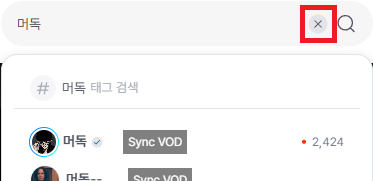
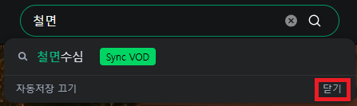
- 처음 사용 시 팝업 차단을 해제해야 할 수 있습니다.
- 검색어 입력 후 Ctrl+Shift+Enter로 첫 번째 다시보기 동기화 버튼을 바로 누를 수 있습니다.
데모 영상
타 플랫폼과 동기화
SOOP · CHZZK 플레이어 옆 패널에서 다른 플랫폼 스트리머를 검색해 동기화합니다.
- SOOP VOD에서는 CHZZK 스트리머와, CHZZK VOD에서는 SOOP 스트리머와 시점을 맞출 수 있습니다.


- 패널 이름은 플랫폼에 맞게 통합되어 있습니다.
데모 영상
전역 동기화
SOOP · CHZZK 현재 탭의 VOD를 기준으로, 다른 탭에 열려 있는 VOD들을 한 번에 맞춥니다.
라이브 당시 시간 좌측의 버튼을 눌러 실행합니다. 버튼 모양 예: 
즉 동기화된 다시보기를 연 다음 그 다시보기에서 앞,뒤로 움직이며 시청하면 다시 두 다시보기의 시점이 달라지는데 이때 이 버튼을 누르면 다시 두 시점이 맞춰집니다.
데모 영상
타임라인 댓글 동기화
SOOP 타임라인이 들어간 댓글을 다른 스트리머 다시보기로 옮길 때, 시점에 맞게 변환할 수 있습니다.
- 댓글 우측 상단의 동기화할 때 이 타임라인을 변환을 켠 뒤 동기화하면, 열린 다시보기에서 변환된 타임라인을 확인·미세조정·복사할 수 있습니다. 토글 위치 예:

데모 영상
타임라인 편집기
SOOP 동기화 없이도 댓글 내용에서 타임라인을 꺼내 편집·복사할 수 있습니다.
타임라인 댓글을 작성할 때 작성모드에서는 타임라인 테스트를 못해서 매번 수정하고 테스트하고 반복하셨나요?
이제 편집기로 미세조정과 테스트를 동시에 해보세요
- 타임라인이 있는 댓글의 더보기(⋮)에서 타임라인 편집을 선택합니다. 메뉴·편집기 예:


- 미세조정 시 Shift를 누르면 10초 단위로 증감합니다. 예:

편집 VOD 인터페이스
SOOP 공식 웹 편집기로 바로 넘어가지 않고, 같은 화면 위에 VOD 편집하기 패널이 열립니다. 아래는 타임라인 그래프 패널(재생 바 아래 타임라인)과 편집 구간 리스트 패널(오른쪽 목록) 기준 설명입니다.
Chrome 확장과 Tampermonkey(SOOP) 모두에서 패널을 쓸 수 있지만 Chrome 확장이 좀 더 기능이 매끄럽습니다.
- 다시보기 플레이어 페이지에서
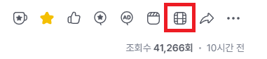
편집VOD 만들기를 눌러 패널을 엽니다. - 열리면 타임라인 그래프 패널과 편집 구간 리스트 패널이 함께 보입니다.
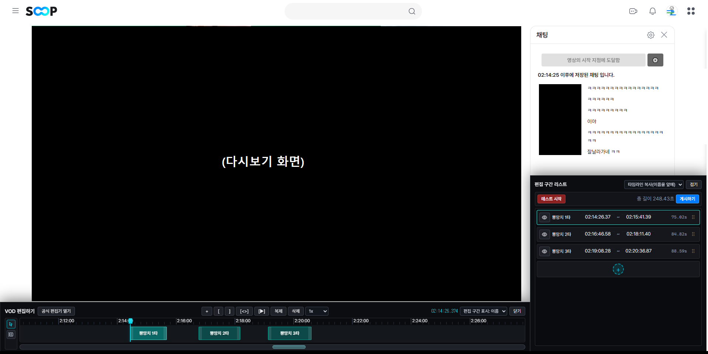
- 편집 구간 추가 — 타임라인 그래프 패널 제목 줄의 ＋와 편집 구간 리스트 패널 맨 아래 ＋로 새 구간을 넣을 수 있습니다. 기본 길이는 약 20초입니다.
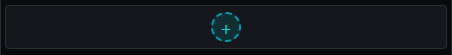
- 편집 구간 수정 — 편집 구간 리스트 패널에서 이름, 시작 시각, 끝 시각을 입력해 바꿀 수 있습니다.
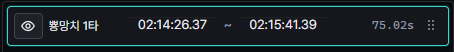
- 타임라인 확대·축소·구간 조절 — 마우스 휠로 하단 스크롤 바를 움직일 수 있으며 Alt를 누른 채로 휠을 사용하여 그래프 확대/축소가 가능합니다. 편집 구간의 양 끝을 드래그하여 길이 조절이 가능합니다.
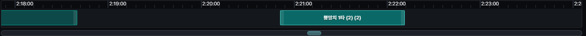
- 편집 구간 순서 — 편집 구간 리스트 패널에서 행을 끌어서 놓기해 순서를 바꿀 수 있습니다.
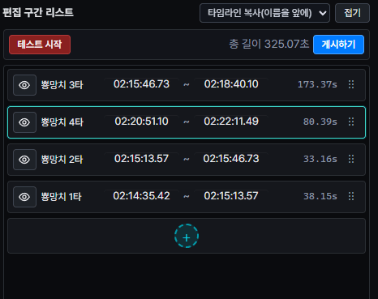
- 타임라인 그래프 패널의 버튼(툴바) —
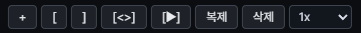
- 편집 구간 추가 — 편집 구간 리스트 패널의 ＋와 동일합니다.
- 편집 구간 시점 ← 현재 시점 — 선택한 편집 구간의 시점을 현재 시점(재생 바)으로 설정합니다. (단축키 [)
- 편집 구간 종점 ← 현재 시점 — 선택한 편집 구간의 종점을 현재 시점(재생 바)으로 설정합니다. (단축키 ])
- 선택한 편집 구간에 타임라인 맞춤 — 보이는 타임라인 범위를 선택 구간에 맞춥니다.
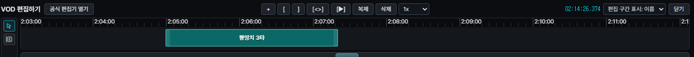
- 선택한 편집 구간 재생 — 그 구간만 재생·정지합니다.
- 선택한 편집 구간 복제 — 같은 내용의 구간을 하나 더 만듭니다. (단축키 Ctrl+D)
- 선택한 편집 구간 삭제 — (단축키 Delete)
- 재생 속도 — 칸을 눌러 0.25x~2x 중에서 고릅니다. (TamperMonkey버전의 경우 여기서 고른 재생 속도가 SOOP 플레이어에 반영되지 않습니다.)
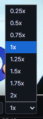
- 선택 모드 — 기본 모드로, 타임라인에서 편집 구간을 선택하거나 이동이 가능합니다. 단축키 V 또는 타임라인 그래프 좌측의 버튼을 눌러 전환합니다.
- 분할 모드(자르기) — 클릭한 시점에서 선택한 편집 구간을 둘로 나눕니다. 단축키 C 또는 타임라인 제목 줄의 자르기
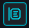
도구입니다.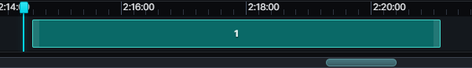
- 편집 구간을 타임라인 댓글 형식으로 복사 — 편집 구간 리스트 패널 제목 줄의
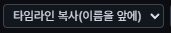
버튼을 누르면 나오는 항목에서 형식(이름 제외 / 이름 앞·뒤)을 고르면 클립보드에 복사됩니다. 댓글 타임라인은 초 단위만 쓰므로 복사 시각은 소수점 아래가 잘립니다. - 공식 편집기 열기 — 패널의 버튼으로 SOOP 공식 웹 편집기를 새 탭에서 엽니다.
- 편집 구간으로 가져오기 — 타임라인 댓글 더보기 메뉴의 편집 구간으로 가져오기로 본문 내용의
시간 ~ 시간줄을 읽어 리스트에 추가합니다.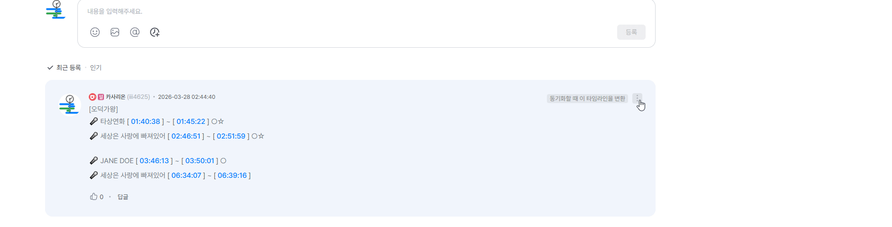
- 테스트하기 — 패널 상단의
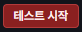
버튼을 누르면 모든 편집 구간이 순차적으로 재생됩니다.다음 편집 구간으로 건너뛸 때 아주 정밀하게 이어 재생되지는 않으니 참고만 해주세요
- 게시하기 — 패널 상단의
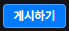
버튼을 누르면 게시할 수 있는 창이 표시됩니다. - 그 외 단축키
- Shift+[({): 구간 시점으로 현재 시점(재생 바)을 이동
- Shift+](}): 구간 종점으로 현재 시점(재생 바)을 이동
- Ctrl+Z: 편집 구간의 변경 내용을 되돌립니다.
편집 구간 길이 총합이 15초 미만이거나 30분 이상인 경우에는 게시가 불가능합니다.
또한 3초 미만의 편집 구간은 최종 편집VOD에 추가되지 않을 것입니다. 주의해주세요.
데모 영상
현재 시간 삽입
SOOP VOD 댓글 작성·수정 시, 재생 중인 시점을 타임라인 형식으로 넣을 수 있습니다.

이전 채팅 복원
SOOP 재생을 시작한 시점 이전 채팅을 일정 구간만큼 불러옵니다.
- 복원 구간(기본 30초 등)은 설정에서 조절합니다.
- 이모티콘만 있는 채팅 제외 옵션이 있습니다.
~초 전툴팁을 누르면 해당 채팅이 나온 시점으로 이동합니다.


데모

시그니처·기본·ogq 이모티콘 등은 표시를 맞추려 했으나, 스트리머 채팅 등은 아직 제한이 있을 수 있습니다.
RP 닉네임 패널
개발이 잠정 중단된 기능입니다. 재개 시기는 정해져 있지 않습니다.
SOOP · CHZZK 방송에서 쓰는 RP(롤플레이) 닉네임과 실제 스트리머 매핑을 패널로 보려는 기능이었습니다.

데이터는 확장에 포함된 JSON을 기준으로 하며, 스트리머·캠페인별로 다를 수 있습니다.
반복 재생
SOOP
재생 바의 설정 버튼을 누르면 반복 재생 옵션이 추가됩니다.
활성화하면 영상이 계속 반복 재생됩니다.